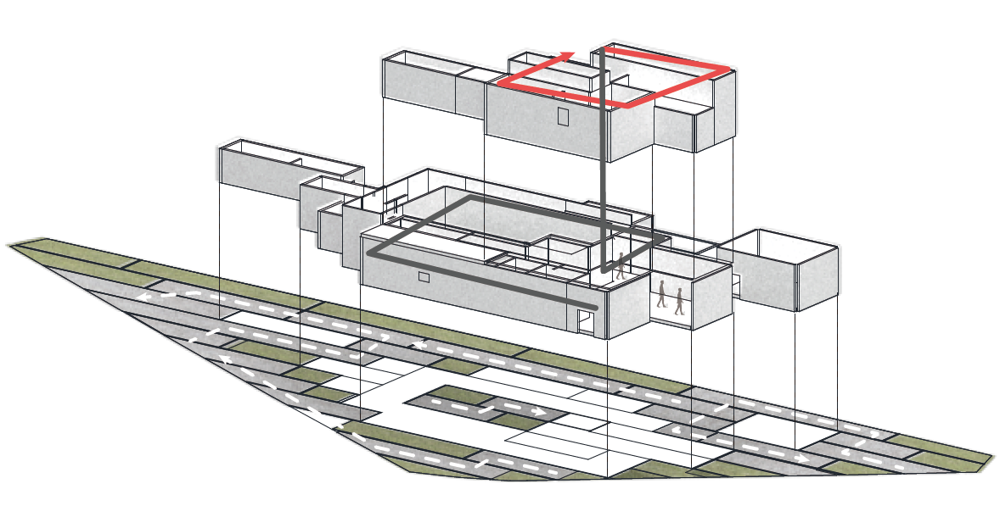

Community Center Project
Stack Health
Changcheon Park, Sinchon, Seoul, Korea
2019
Architecture Studio 2
Site Analysis
Poor Public Medical Care Status
Above all the information about the site of Changcheon Park located in Sinchon, what was particularly interesting was the poor public medical care status. There are a total of 3 public health centers in Seodaemungu, but none near Changcheondong. Then onto researching private hospitals within the boundary of 500m of the site, there were a bunch of private hospitals but most of them were related to young beauty such as plastic surgery or dentistry.
Among the roles of public health care centers, providing the citizens health examination is especially crucial. Health examination expenses are way cheaper at public centers. In this boundary there are only 2 places for health examination. Since Yonsei Severance Hospital health examination costs very much, a small number of private hospitals get crowded leading to massive complaints on long waiting hours. Therefore, since public medical facility lacks in Sinchon, young people or workers who need their examination results face the inconvenience of having to move further or find a comparatively cheaper private hospital. This might not even be possible for the elderly who are reluctant to travel in further distances.
Concept
In order to design a health examination center, additional research was required. Important features were that first, the health examination process has a fixed sequence for efficiency. The sequence will be clearer if it was in linear form. After the examination you need to return to your original start, so circulation form with a hole in the middle is best so that people going and coming are divided. Second, each examination room must be independent for their professional inspection, but it must still be connected to one another. Third, depending on by age, type of health examination would vary. I devised a program to divide our target into 2 types. Type 1 examination is a simpler one for college students reaching from 기초검진 to 방사선 검사. Type 2 examination includes surpluses of 초음파 and 내시경 for older people.
Another layer added is outside elements. A community center can enhance one’s health not just by medical services but also intriguing physical activities and social meetings. A park with numerous paths rather than plazas can urge people to walk more and bump into more various people.
